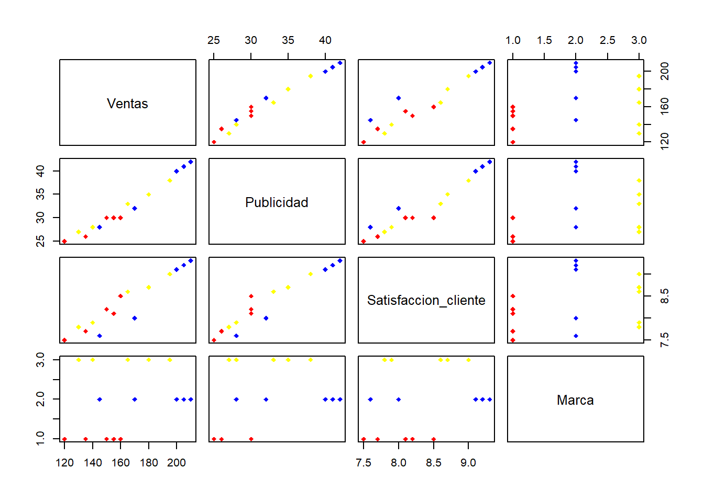

library(tidyverse)Ejercicio estadística descriptiva multivariante
Enlace al repositorio de Git-Hub: repositorio
Enunciado y datos
Una empresa quiere analizar si existe relación entre las ventas de sus productos, la inversión en publicidad y la satisfacción del cliente (y la marca). Los datos que corresponden a las ventas han sido registrados en miles de unidades, el gasto en publicidad en miles de euros y la puntuación de satisfacción del cliente en una escala de 1 a 10 para 30 productos, los puedes descargar en el siguiente enlace: datos empresa
Lectura y limpieza de los datos
datos <- read.csv('datos/datos_empresa.csv',header = TRUE)Nos pasamos nuestros datos a una matriz donde cada fila correponde a un producto. Además nos pasamos nuestros valores como números para después poder trabajar con ellos y obtener valores como la varianza, media, la matriz de dispersión…
a <- datos %>% select(2:5) %>% mutate(Marca = case_when(
.$Marca == 'Marca A' ~ 1,
.$Marca == 'Marca B' ~ 2,
.$Marca == 'Marca C' ~ 3)) %>% as.matrix()
for (i in 1:4){
a[,4]<- as.numeric(a[,4])
}Apartado 1
Para el apartado 1 calulamos la matriz de dispersión con la función pairs()
pairs(a,
col = c('red','blue','yellow')[a[,4]],
pch = 18)
Si consideramos la submatriz de 3x3 formada por Ventas-Publicidad-Satisfaccion_cliente podemos intuir que todas tendrán una correlación. Esto lo podemos observar con la función ggpairs del paquete GGally:
g <- datos %>% select(2:5)
GGally::ggpairs(g,
aes(color = Marca)) +
scale_color_manual(values = c(
'Marca A' = 'red', 'Marca B' = 'blue', 'Marca C' = 'yellow')) + theme_minimal() +
labs(title = 'Matriz de dispersión con ggpairs', color = 'Marca')
Observamos que los valores de las correlaciones són positivos muy cercanos a 1. Esto significa que podemos aproximar nuestros valores muestrales se acercan mucho a ser una función lineal de la otra con una tendencia creciente.
Apartado 2
Calcula la matriz de datos centrada y el vector de medias con las formas matriciales estudiada en clase de teoría. Interpreta el vector de medias en el contexto del problema.
Para eso primero definimos la matriz de datos:
mat_data <- datos %>% select(2:4) %>% as.matrix()
dim(mat_data)[1] 30 3Matriz de datos centrada
- Calculamos el vector de medias:
vect_mean = c(
m_ventas = mean(mat_data[,1]),
m_publi = mean(mat_data[,2]),
m_satis = mean(mat_data[,3])
)
vect_mean m_ventas m_publi m_satis
164.000000 32.333333 8.346667 Este vector nos da las medias de las ventas, la publicidad y la satisfacción, en este orden, de todos los productos estudiados sin tener en cuenta la marca.
- Calculamos matriz de datos centrada
mat_cent <- as.matrix(cbind(
mat_data[,1]-vect_mean[1],
mat_data[,2]-vect_mean[2],
mat_data[,3]-vect_mean[3]
))
# enseñamos 5 filas:
mat_cent[1:5,] [,1] [,2] [,3]
[1,] -14 -2.3333333 -0.1466667
[2,] 36 7.6666667 0.7533333
[3,] 16 2.6666667 0.3533333
[4,] -44 -7.3333333 -0.8466667
[5,] 6 -0.3333333 -0.3466667Apartado 3
Calcula la matriz de covarianzas y la matriz de correlaciones utilizando las formas matriciales vistas en la clase de teoría. A continuación, interpreta los resultados obtenidos para ambas matrices en el contexto del problema.
Obtendremos dos matrices 3x3. Para hacerlo de manera sencilla definimos las siguientes funciones para la matriz de la varianza y varianza muestral.
- FUNCIONES PARA MATRIZ VARIANZA
covarianza <- function(X,Y){
n = length(X)
mx = mean(X)
my = mean(Y)
V = 0
for (i in 1:n){
V = V + (X[i]-mx)*(Y[i]-my)
}
V = V/n
return(V)
}
matriz_var <- function(M){
m = dim(M)[2]
n = dim(M)[1]
mat_V= matrix(rep(0,m*m),nrow = m)
for (i in 1:m){
for(j in 1:m){
mat_V[i,j] = covarianza(M[,i],M[,j])
}
}
return(mat_V)
}- FUNCIONES PARA MATRIZ VARIANZA MUESTRAL
covarianza_muestral <- function(X,Y){
n = length(X)
mx = mean(X)
my = mean(Y)
V = 0
for (i in 1:n){
V = V + (X[i]-mx)*(Y[i]-my)
}
V = V/(n-1)
return(V)
}
matriz_var_m <- function(M){
m = dim(M)[2]
n = dim(M)[1]
mat_V = matrix(rep(0,m*m),nrow = m)
for (i in 1:m){
for(j in 1:m){
mat_V[i,j] = covarianza_muestral(M[,i],M[,j])
}
}
return(mat_V)
}Y ahora calculamos las matrices.
[1] "Matriz varianza" [,1] [,2] [,3]
[1,] 767.33333 148.666667 15.5466667
[2,] 148.66667 29.555556 3.0844444
[3,] 15.54667 3.084444 0.3491556Calculamos ahora la matriz de correlaciones
[1] "Matriz correlaciones" [,1] [,2] [,3]
[1,] 1.0000000 0.9871929 0.9498079
[2,] 0.9871929 1.0000000 0.9601695
[3,] 0.9498079 0.9601695 1.0000000Apartado 4
Calcula la matriz de correlaciones muestrales con la forma matricial estudiada en clase de teoría y revisa que lo has hecho bien con la función disponible de R. Interpreta los resultados obtenidos.
Definimos la matriz de varianza y correlaciones muestrales:
[1] "Matriz de varianza muestral nuestra vs R" [,1] [,2] [,3]
[1,] 793.79310 153.793103 16.0827586
[2,] 153.79310 30.574713 3.1908046
[3,] 16.08276 3.190805 0.3611954 Ventas Publicidad Satisfaccion_cliente
Ventas 793.79310 153.793103 16.0827586
Publicidad 153.79310 30.574713 3.1908046
Satisfaccion_cliente 16.08276 3.190805 0.3611954Calculamos la de correlación:
[1] "Matriz de correlación muestral nuestra vs R" [,1] [,2] [,3]
[1,] 1.0000000 0.9871929 0.9498079
[2,] 0.9871929 1.0000000 0.9601695
[3,] 0.9498079 0.9601695 1.0000000 Ventas Publicidad Satisfaccion_cliente
Ventas 1.0000000 0.9871929 0.9498079
Publicidad 0.9871929 1.0000000 0.9601695
Satisfaccion_cliente 0.9498079 0.9601695 1.0000000Como podemos observar en ambos casos los FALSE se deben a decimales que ni se muestran en pantalla (se deben utilizar métodos numéricos distintos y salen diferencias mínimas).
Apartado 5
Calcula la varianza generalizada y la variación total del conjunto de datos numéricos que estamos estudiando. Interpreta los resultados obtenidos.